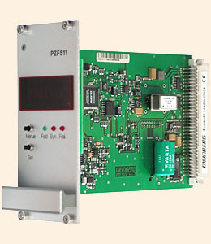
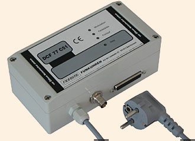
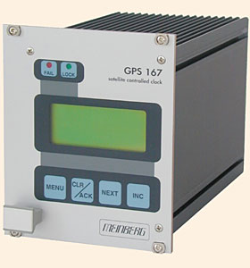
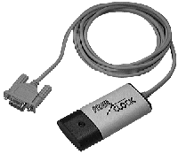

Generic Reference Driver
Last update:
27-Jan-2014 05:31
UTC
Synopsis
Address: 127.127.8.u
Reference ID: PARSE
Driver ID: GENERIC
Serial Port: /dev/refclock-u; TTY mode according to clock type
PPS device: /dev/refclockpps-u; alternate PPS device (if not available via the serial port)
Description
The PARSE driver supports 20 different clock types/configurations. PARSE is actually a multi-clock driver.
The actual receiver status is mapped into various synchronization states generally used by receivers. The driver is configured to interpret the time codes of Meinberg DCF77 AM receivers, DCF77 FM receivers, Meinberg GPS16x/17x receivers, Trimble SV6 GPS, ELV DCF7000, Schmid, Wharton 400A and low cost receivers (see list below).
The reference clock support in NTP contains the necessary configuration tables for those receivers. In addition to supporting several different clock types and up to 4 devices, the processing of a PPS signal is also provided as a configuration option. The PPS configuration option uses the receiver-generated time stamps for feeding the PPS loopfilter control for much finer clock synchronization.
CAUTION: The PPS configuration option is different from the hardware PPS signal, which is also supported (see below), as it controls the way ntpd is synchronized to the reference clock, while the hardware PPS signal controls the way time offsets are determined.
The use of the PPS option requires receivers with an accuracy of better than 1ms.
Timecode variables listed by ntpq (8)
The ntpq program can read and display several clock variables. These hold the following information:
- refclock_format
- A qualification of the decoded time code format.
- refclock_states
- The overall running time and the accumulated times for the clock event states.
- refclock_status
- Lists the currently active receiver flags. Additional feature flags for the receiver are optionally listed in parentheses.
- refclock_time
- The local time with the offset to UTC (format HHMM).
- timecode
- The actual time code.
If PPS information is present, additional variables are available:
- refclock_ppsskew
- The difference between the RS-232-derived timestamp and the PPS timestamp.
- refclock_ppstime
- The PPS timestamp.
Supported Devices
Currently, twenty-four clock types are supported by the PARSE driver and up to four (devices /dev/refclock-0 - /dev/refclock-3) of these clocks may be operational at any one time.
A note on the implementations:
The pictures below have been taken from and are linked to the vendors' web pages.
- server 127.127.8.0-3 mode 0
Meinberg PZF5xx receiver family (FM demodulation/TCXO / 50μs)
- server 127.127.8.0-3 mode 1
Meinberg PZF5xx receiver family (FM demodulation/OCXO / 50μs)

- server 127.127.8.0-3 mode 2
Meinberg DCF C51 receiver and similar (AM demodulation / 4ms)

This mode expects the Meinberg standard time string format with 9600/7E2.
Note: mode 2 must also be used for Meinberg PCI cards under Linux, e.g. the GPS PCI card or the DCF77 PCI card. Please note the Meinberg Linux driver must be installed. That driver emulates a refclock device in order to allow ntpd to access those cards. For details, please refer to the README file that comes with the Meinberg driver package.
- server 127.127.8.0-3 mode 3
ELV DCF7000 (sloppy AM demodulation / 50ms)
- server 127.127.8.0-3 mode 4
Walter Schmid DCF receiver Kit (AM demodulation / 1ms)
- server 127.127.8.0-3 mode 5
RAW DCF77 100/200ms pulses (Conrad DCF77 receiver module / 5ms)
- server 127.127.8.0-3 mode 6
RAW DCF77 100/200ms pulses (TimeBrick DCF77 receiver module / 5ms)
- server 127.127.8.0-3 mode 7
Meinberg GPS16x/GPS17x receivers (GPS / <<1μs)

This mode expects either the University of Erlangen time string format or the Meinberg standard time string format at 19200/8N1.
The University of Erlangen format is preferred. Newer Meinberg GPS receivers can be configured to transmit that format; for older devices, a special firmware version may be available.
In this mode some additional GPS receiver status information is also read. However, this requires a point-to-point connection. Mode 18 should be used if the device is accessed by a multidrop connection.
Note: mode 7 must not be used with Meinberg PCI cards; use mode 2 instead.
- server 127.127.8.0-3 mode 8
IGEL clock

- server 127.127.8.0-3 mode 9
Trimble SVeeSix GPS receiver TAIP protocol (GPS / <<1μs)
- server 127.127.8.0-3 mode 10
Trimble SVeeSix GPS receiver TSIP protocol (GPS / <<1μs) (no kernel support yet)
- server 127.127.8.0-3 mode 11
Radiocode Clocks Ltd RCC 8000 Intelligent Off-Air Master Clock support
- server 127.127.8.0-3 mode 12
HOPF Funkuhr 6021

- server 127.127.8.0-3 mode 13
Diem's Computime Radio Clock
- server 127.127.8.0-3 mode 14
RAWDCF receiver (DTR=high/RTS=low)
- server 127.127.8.0-3 mode 15
WHARTON 400A Series Clocks with a 404.2 Serial Interface
- server 127.127.8.0-3 mode 16
RAWDCF receiver (DTR=low/RTS=high)
- server 127.127.8.0-3 mode 17
VARITEXT Receiver (MSF)
- server 127.127.8.0-3 mode 18
Meinberg GPS16x/GPS17x receivers (GPS / <<1μs)
This mode works without additional data communication (version, GPS status etc.) and thus should be used with multidrop, heterogeneous multiclient operation.
Note: mode 18 must not be used with Meinberg PCI cards, use mode 2 instead.
- server 127.127.8.0-3 mode 19
Gude Analog- und Digitalsystem GmbH 'Expert mouseCLOCK USB v2.0'
- server 127.127.8.0-3 mode 20
RAWDCF receiver similar to mode 14, but operating @ 75 baud (DTR=high/RTS=low)
Driving the DCF clocks at 75 baud may help to get them to work with a bunch of common USB serial converters, that do 75 but cannot do 50 baud at all, e.g. those based on Prolific PL2303.
- server 127.127.8.0-3 mode 21
RAWDCF receiver similar to mode 16, but operating @ 75 baud (DTR=low/RTS=high)
See comment from mode 20 clock.
- server 127.127.8.0-3 mode 22
MEINBERG, mode 2 but with POWERUP trust
- server 127.127.8.0-3 mode 23
MEINBERG, mode 7 but with POWERUP trust
- server 127.127.8.0-3 mode 24
Schweitzer Engineering Laboratories
Actual data formats and setup requirements of the various clocks can be found in NTP PARSE clock data formats.
Operation
The reference clock support software carefully monitors the state transitions of the receiver. All state changes and exceptional events (such as loss of time code transmission) are logged via the syslog facility. Every hour a summary of the accumulated times for the clock states is listed via syslog.
PPS support is only available when the receiver is completely synchronized. The receiver is believed to deliver correct time for an additional period of time after losing synchronization, unless a disruption in time code transmission is detected (possible power loss). The trust period is dependent on the receiver oscillator and thus is a function of clock type.
Raw DCF77 pulses can be fed via a level converter to the RXD pin of an RS-232 serial port (pin 3 of a 25-pin connector or pin 2 of a 9-pin connector). The telegrams are decoded and used for synchronization. DCF77 AM receivers can be bought for as little as $25. The accuracy is dependent on the receiver and is somewhere between 2ms (expensive) and 10ms (cheap). Synchronization ceases when reception of the DCF77 signal deteriorates, since no backup oscillator is available as usually found in other reference clock receivers. So it is important to have a good place for the DCF77 antenna. During transmitter shutdowns you are out of luck unless you have other NTP servers with alternate time sources available.
In addition to the PPS loopfilter control, a true PPS hardware signal can be utilized via the PPSAPI interface. PPS pulses are usually fed via a level converter to the DCD pin of an RS-232 serial port (pin 8 of a 25-pin connector or pin 1 of a 9-pin connector). To select PPS support, the mode parameter is the mode value as above plus 128. If 128 is not added to the mode value, PPS will be detected to be available but will not be used.
Hardware PPS support
For PPS to be used, add 128 to the mode parameter.
If the PPS signal is fed in from a device different from the device providing the serial communication (/dev/refclock-{0..3}), this device is configured as /dev/refclockpps-{0..3}. This allows the PPS information to be fed in e.g. via the parallel port (if supported by the underlying operation system) and the date/time telegrams to be handled via the serial port.
Monitor Data
Clock state statistics are written hourly to the syslog service. Online information can be found by examining the clock variables via the ntpq cv command.
Some devices have quite extensive additional information (GPS16x/GPS17x, Trimble). The driver reads out much of the internal GPS data and makes it accessible via clock variables. To find out about additional variable names, query for the clock_var_list variable on a specific clock association as shown below.
First let ntpq display the table of associations:
ntpq> as ind assID status conf reach auth condition last_event cnt =========================================================== 1 19556 9154 yes yes none falsetick reachable 5 2 19557 9435 yes yes none candidat clock expt 3 3 19558 9714 yes yes none pps.peer reachable 1
Then switch to raw output. This may be required because of display limitations in ntpq/ntpd - so large lists need to be retrieved in several queries.
ntpq> raw Output set to raw
Use the cv command to read the list of clock variables of a selected association:
ntpq> cv 19557 clock_var_list
The long output of the command above looks similar to:
assID=19557 status=0x0000, clock_var_list="type,timecode,poll,noreply,badformat,baddata,fudgetime1, fudgetime2,stratum,refid,flags,device,clock_var_list,refclock_time,refclock_status, refclock_format,refclock_states,refclock_id,refclock_iomode,refclock_driver_version, meinberg_gps_status,gps_utc_correction,gps_message,meinberg_antenna_status,gps_tot_51, gps_tot_63,gps_t0a,gps_cfg[1],gps_health[1],gps_cfg[2],gps_health[2],gps_cfg[3], gps_health[3],gps_cfg[4],gps_health[4],gps_cfg[5]"
Then use the cv command again to list selected clock variables. The following command must be entered as a single line:
ntpq> cv 19557 refclock_status,refclock_format,refclock_states,refclock_id, refclock_iomode,refclock_driver_version,meinberg_gps_status,gps_utc_correction, gps_message,meinberg_antenna_status,gps_tot_51,gps_tot_63,gps_t0a,gps_cfg[1], gps_health[1],gps_cfg[2],gps_health[2],gps_cfg[3],gps_health[3],gps_cfg[4], gps_health[4],gps_cfg[5]
The output of the command above is wrapped around depending on the screen width and looks similar to:
status=0x0003, refclock_status="UTC DISPLAY; TIME CODE; PPS; POSITION; (LEAP INDICATION; PPS SIGNAL; POSITION)", refclock_format="Meinberg GPS Extended", refclock_states="*NOMINAL: 21:21:36 (99.99%); FAULT: 00:00:03 (0.00%); running time: 21:21:39", refclock_id="GPS", refclock_iomode="normal", refclock_driver_version="refclock_parse.c,v 4.77 2006/08/05 07:44:49 kardel RELEASE_20060805_A", meinberg_gps_status="[0x0000] <OK>", gps_utc_correction="current correction 14 sec, last correction on c7619a00.00000000 Sun, Jan 1 2006 0:00:00.000", gps_message="/PFU3SOP-4WG14EPU0V1KA", meinberg_antenna_status="RECONNECTED on 2006-07-18 08:13:20.0000000 (+0000) UTC CORR, LOCAL TIME, reconnect clockoffset +0.0000000 s, disconnect time 0000-00-00 00:00:00.0000000 (+0000) ", gps_tot_51="week 1400 + 3 days + 42300.0000000 sec", gps_tot_63="week 1400 + 3 days + 42294.0000000 sec", gps_t0a="week 1400 + 5 days + 71808.0000000 sec", gps_cfg[1]="[0x9] BLOCK II", gps_health[1]="[0x0] OK;SIGNAL OK", gps_cfg[2]="[0x0] BLOCK I", gps_health[2]="[0x3f] PARITY;MULTIPLE ERRS", gps_cfg[3]="[0x9] BLOCK II", gps_health[3]="[0x0] OK;SIGNAL OK", gps_cfg[4]="[0x9] BLOCK II", gps_health[6]="[0x0] OK;SIGNAL OK", gps_cfg[5]="[0x9] BLOCK II"
Fudge Factors
- time1 time
- Specifies the time offset calibration factor, in seconds and fraction. The default value depends on the clock type.
- time2 time
- If flag1 is 0, time2 specifies the offset of the PPS signal from the actual time (PPS fine tuning).
- If flag1 is 1, time2 specifies the number of seconds a receiver with a premium local oscillator can be trusted after losing synchronisation.
- stratum stratum
- The stratum for this reference clock.
- refid refid
- The refid for this reference clock.
- flag1 { 0 | 1 }
- If 0, the fudge factor time2 refers to the PPS offset.
- If 1, time2 refers to the TRUST TIME.
- flag2 { 0 | 1 }
- If flag2 is 1, sample PPS on CLEAR instead of on ASSERT.
- flag3 { 0 | 1 }
- If flag3 is 1, link kernel PPS tracking to this refclock instance.
- flag4 { 0 | 1 }
- Delete next leap second instead of adding it. (You'll need to wait a bit for that to happen 8-)
Note about auxiliary Sun STREAMS modules (SunOS and Solaris):
- The timecode of these receivers can be sampled via a STREAMS module in the kernel. (The STREAMS module has been designed for use with Sun systems under SunOS 4.1.x or Solaris 2.3 - 2.8. It can be linked directly into the kernel or loaded via the loadable driver mechanism.) This STREAMS module can be adapted to convert different time code formats. Nowadays the PPSAPI mechanism is usually used.
Making your own PARSE clocks
The parse clock mechanism deviates from the way other NTP reference clocks work. For a short description of how to build parse reference clocks, see making PARSE clocks.
Additional Information
Reference Clock Drivers